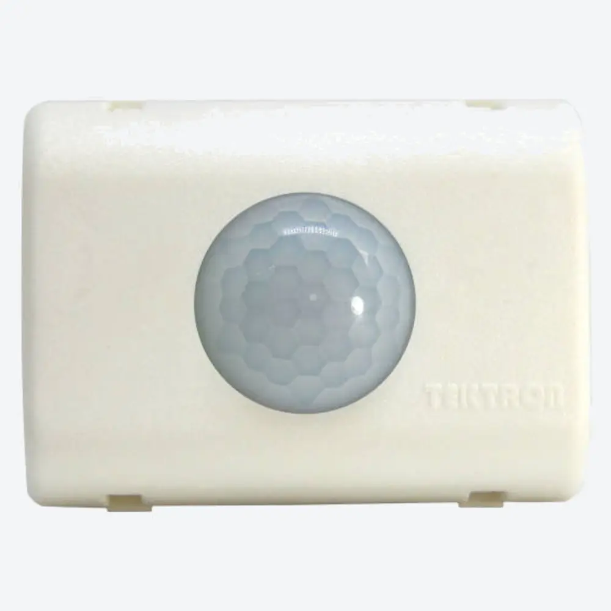
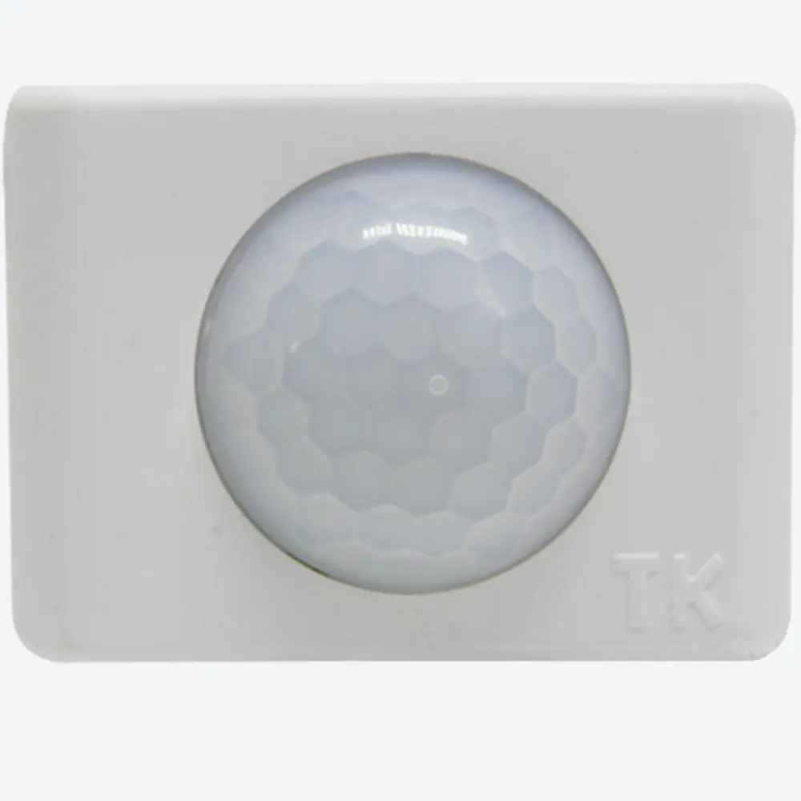
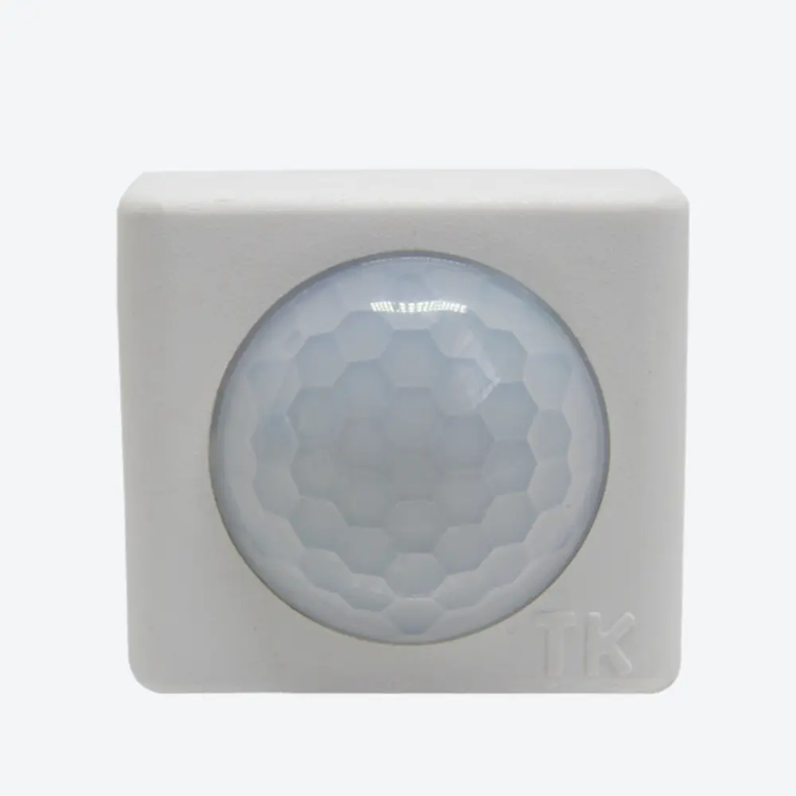
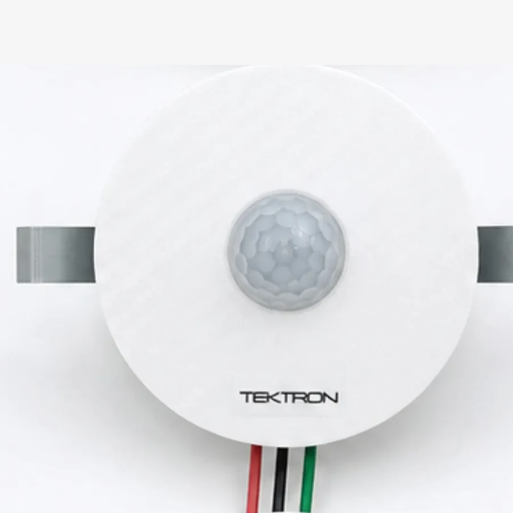
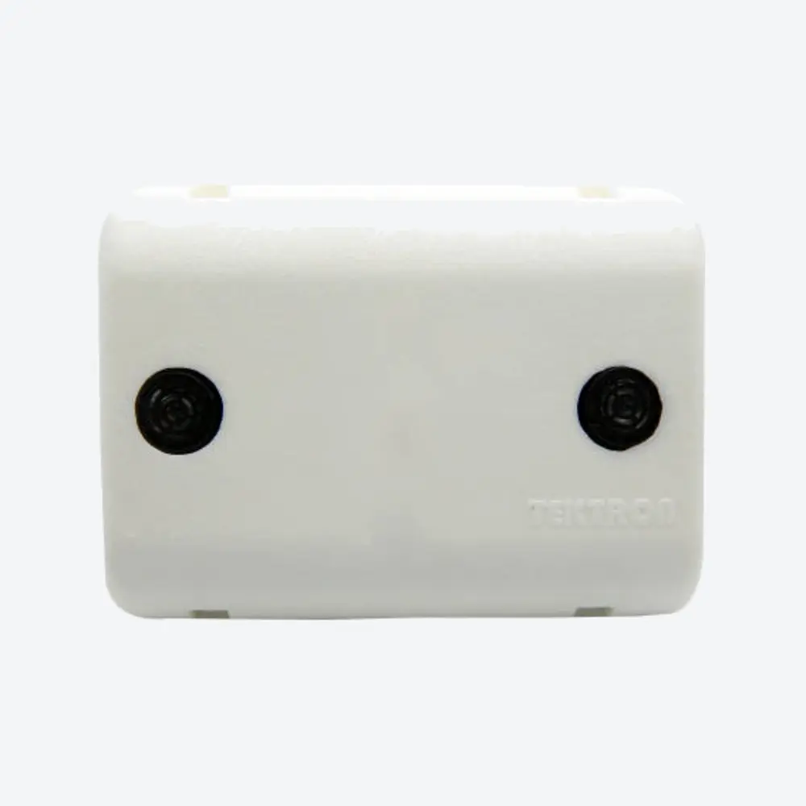
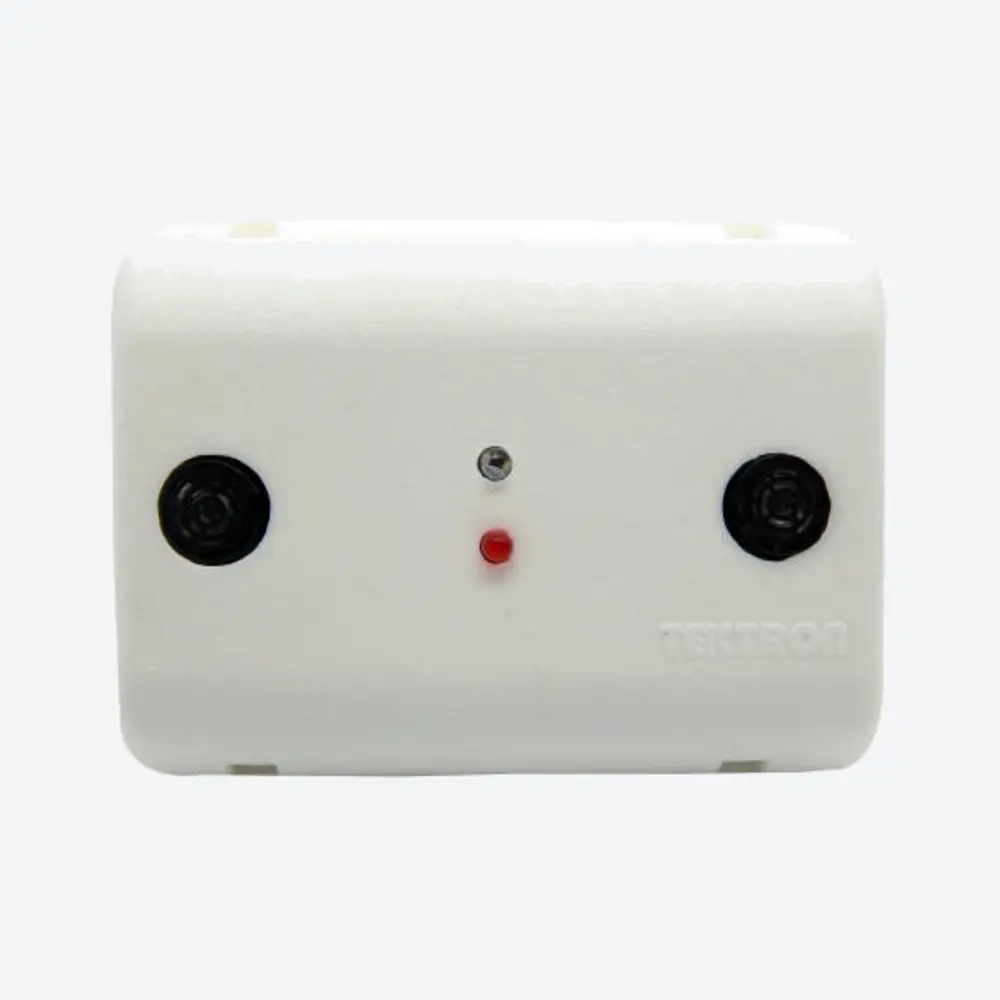

Sensor de movimento para instalação no teto
A melhor escolha para o teto depende de três coisas: o tipo de teto, quanto do ambiente você precisa cobrir e quem costuma circular por ali.
A Tektron tem sensores para cada uma dessas situações. Modelos de sobrepor, outros para embutir em forro de gesso ou madeira, versões com cobertura de 360° e opções com tecnologia mais sensível, que percebem até os movimentos mais discretos.
No fim, o que define o sensor certo é sempre o tipo de teto e a forma como o espaço é usado. Não existe um único modelo que resolva todos os casos, e é por isso que vale entender o seu antes de decidir.
O problema
- A luz do ambiente fica acesa por horas, sem ninguém embaixo dela Em salas, escritórios e ambientes amplos com controle pelo teto, o interruptor único incentiva deixar tudo aceso o dia inteiro.
- O teto é de gesso, drywall ou forro de madeira Nem todo sensor de sobrepor tem um sistema de fixação pensado para esse tipo de forro.
- O ambiente tem mais de um ponto de acesso Um sensor voltado para uma única direção pode não perceber quem entra por outro lado do ambiente.
- Quem ocupa o ambiente se movimenta devagar ou fica parado fazendo pouco movimento Idosos, pessoas com mobilidade reduzida ou quem permanece sentado fazendo pequenos gestos podem não gerar movimento suficiente para alguns sensores.
A solução Tektron
A Tektron fabrica sensores de teto para quatro situações diferentes. O critério de escolha começa pelo tipo de teto e pela forma de ocupação do ambiente — não pelo produto.
Teto ou parede, instalação de sobrepor
Para o teto comum (alvenaria), de sobrepor, o BS-50 é a solução principal: sensor infravermelho com articulador ajustável e espaguete de proteção nos fios. Para instalações que precisam de ajuste de sensibilidade e temporização ampliada (até 12 minutos), utilize o MI-500. Para um sensor mais discreto e compacto, o CS-5 (com articulador) ou o TC-5 (super compacto, acionamento silencioso, cargas baixas como LED).

BS-50
Solução principal: articulador e fiação protegida.
MI-500
Ajuste de sensibilidade e temporização ampliada.

CS-5
Compacto, com articulador, controle por relé.

TC-5
Super compacto, sem articulador, acionamento silencioso.
Linha compacta para o mesmo tipo de instalação: CS-5 (com articulador, controle por relé) e TC-5 (sem articulador, controle por SCR/Triac — acionamento silencioso —, cargas baixas) — dimensões menores (29–50 mm) que o BS-50/MI-500 (65 mm).
Ver o MI-500, com ajuste de sensibilidade e temporização ampliada
Teto de gesso, drywall ou forro de madeira
Para embutir diretamente no forro — não na parede —, o STI-550 é o modelo indicado: compatível com forro de madeira ou gesso, com furo de fixação de 56 mm de diâmetro.

STI-550
Único modelo Tektron para embutir no forro.
Cobertura 360° ao redor do ponto de instalação
Para ambientes com mais de um ponto de acesso, onde o campo de visão precisa cobrir todas as direções ao redor do sensor, utilize o TKR — sensor por radar Doppler, com detecção 360° que atravessa paredes finas de madeira, gesso ou vidro, captando movimento do outro lado (por exemplo, no cômodo vizinho). Também detecta a abertura de portas metálicas — o metal reflete bem o radar —, mas não atravessa o metal como atravessa madeira ou gesso. A sensibilidade a movimentos sutis é parecida com a do sensor ultrassônico, e o TKR é imune ao ar em movimento de janelas ou saídas de ar insuflado. Ainda assim, evite instalar muito próximo do aparelho de ar-condicionado em si — peças móveis do equipamento (venezianas, ventilador interno) podem ser captadas como movimento. Para acionamento silencioso — sem o clique do relé —, utilize o TKT: controle por SCR/Triac, indicado para cargas baixas como LED.
TKR
Solução principal: detecção 360° por radar Doppler.
TKT
Acionamento silencioso — sem clique de relé.
Em instalações com sensores Doppler próximos, mantenha distância adequada e evite sobreposição das áreas de detecção, conforme as orientações técnicas.
Ver o TKT, com acionamento silencioso
Ambientes com movimentação lenta ou discreta
Para ambientes fechados de até 15 m² onde os ocupantes se movimentam devagar ou permanecem fazendo pequenos gestos — corredores, escadas, halls, banheiros e escritórios frequentados por idosos, pessoas com mobilidade reduzida ou baixa estatura —, o MU-500 (tecnologia ultrassônica) é a solução principal: percebe movimentos mais sutis que o infravermelho, o que ajuda a manter a iluminação acionada enquanto o ambiente continua ocupado. Para o mesmo cenário com fotocélula integrada, utilize o MU-600.

MU-500
Solução principal: detecta durante o dia e a noite.

MU-600
Com fotocélula integrada.
Indicados para ambientes fechados de até 15 m² — corredores, escadas, halls, banheiros e escritórios. Para áreas amplas como depósito, garagem ou área comum, veja sensores para corredores, escadas e grandes ambientes. Em instalações com sensores ultrassônicos próximos, mantenha distância adequada e evite sobreposição das áreas de detecção, conforme as orientações técnicas.
Características que orientam a escolha
Além da situação de instalação, estes critérios ajudam a comparar os modelos entre si:
Para automatizar um interruptor já existente em caixa 4x2, sem instalar nada no teto, veja sensor de movimento para caixa 4x2.
Instalação e ligação elétrica
Todos os modelos desta página (CS-5, TC-5, BS-50, MI-500, STI-550, TKR, TKT, MU-500, MU-600) usam o mesmo padrão de cores nos 3 fios, bivolt (127 V / 220 V):
Boas práticas de instalação:
- Desenergize o circuito antes de instalar.
- Confira a tensão (127 V ou 220 V) e a potência da carga — modelos com controle por relé (BS-50, MI-500, STI-550, TKR, MU-500, MU-600) suportam até 200 W em 127 V ou 350 W em 220 V; os modelos de carga baixa por SCR/Triac (TC-5, TKT) suportam até 30 W em 127 V ou 60 W em 220 V.
- O comprimento do fio varia entre 20 cm (CS-5, TC-5, STI-550, TKR, TKT) e 30 cm (BS-50, MI-500, MU-500, MU-600) — confira o modelo escolhido.
- No STI-550, o furo de fixação no forro tem 56 mm de diâmetro.
- Em instalações com sensores Doppler (TKR/TKT) ou ultrassônicos (MU-500/MU-600) próximos, mantenha distância adequada e evite sobreposição das áreas de detecção, conforme as orientações técnicas.
- Respeite o diagrama de ligação oficial do modelo escolhido.
Resultado esperado
O ambiente passa a ter a iluminação do teto acionada automaticamente por movimento, com a cobertura e a sensibilidade compatíveis com o formato do espaço e com quem o ocupa — e, principalmente, apaga sozinho depois do tempo configurado, sem depender de ninguém lembrar.
Fabricação e suporte
Todos os modelos desta página são fabricados no Brasil pela Tektron, com documentação técnica e diagrama de ligação disponíveis para cada modelo, e suporte técnico especializado para dúvidas de instalação.
Perguntas frequentes
- Qual sensor de teto escolher?
- Depende do tipo de teto e da ocupação do ambiente: teto comum de sobrepor (BS-50 ou MI-500), forro de gesso ou madeira (STI-550), cobertura 360° para ambientes com mais de um ponto de acesso (TKR ou TKT), ou ambientes com movimentação lenta e discreta, como idosos ou mobilidade reduzida (MU-500 ou MU-600). O bloco "Escolha rápida" no início da página traz o link direto para cada situação.
- Qual a diferença entre o BS-50 e o MI-500?
- O MI-500 acrescenta ajuste de sensibilidade, acionamento zero-cross e um quarto tempo de desligamento (12 min). O BS-50 tem os três tempos mais curtos (5 s · 1 min · 4 min), sem esses ajustes.
- O STI-550 funciona em teto de gesso ou drywall?
- Sim — é o modelo desenvolvido especificamente para embutir em forro de madeira ou gesso, com furo de fixação de 56 mm de diâmetro.
- O sensor ultrassônico (MU-500/MU-600) é melhor que o infravermelho?
- Não é "melhor" em todo cenário — é uma característica diferente. O infravermelho tem campo de detecção mais definido e depende mais da posição de instalação e da direção do movimento. O ultrassônico percebe movimentos mais sutis, o que favorece ambientes com usuários de movimentação lenta ou discreta, como idosos ou pessoas com mobilidade reduzida, porém não pode ser utilizado em locais com ventilação.
- Qual a diferença entre o TKR e o TKT?
- Os dois têm detecção 360° por radar Doppler. O TKR tem articulador e ajuste de sensibilidade, com controle por relé; o TKT não tem esses ajustes, mas tem acionamento silencioso (controle por SCR/Triac, sem o clique do relé), indicado para cargas baixas (até 60 W) como LED.
- Funciona com lâmpada LED?
- Sim. Para cargas baixas, prefira os modelos com controle por SCR/Triac (TC-5, TKT), com limite de 30 W em 127 V ou 60 W em 220 V. Os demais modelos, com controle por relé, suportam até 200 W em 127 V ou 350 W em 220 V.
- O sensor detecta uma pessoa parada?
- Este produto detecta movimento. Se a pessoa permanecer completamente imóvel, pode não ocorrer uma nova detecção. Por isso, o termo técnico adotado pela Tektron é sensor de movimento, embora no mercado brasileiro ele também seja conhecido como sensor de presença.
Próximo passo
Seja qual for o modelo — BS-50, MI-500, CS-5, TC-5, STI-550, TKR, TKT, MU-500 ou MU-600 —, o próximo passo é o mesmo: